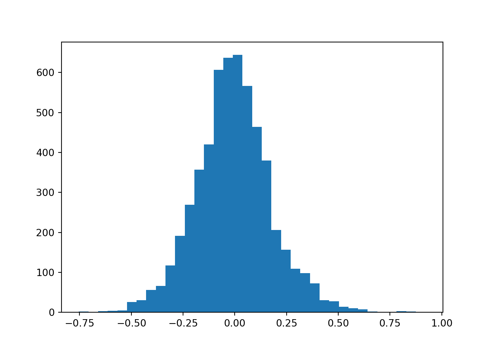
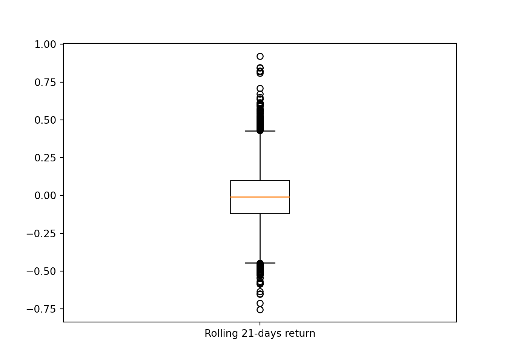

library(readr) # read_csv()
library(dplyr) # mutate(), filter()
library(lubridate)
library(ggplot2)
df_spy <- read_csv('../../raw_data/SPY.csv') |>
select(date, adjClose) |>
arrange(date) |>
mutate(return = log(adjClose / lag(adjClose))) |>
filter(date > '2018-01-01')
df_amd <- read_csv('../../raw_data/AMD.csv') |>
select(date, adjClose) |>
arrange(date) |>
mutate(return = log(adjClose / lag(adjClose))) |>
filter(date > '2018-01-01')This post is about summarizing the various statistical moments when doing quantitative finance. The focus is on the asset returns. From a previous post, we already know that financial asset returns do not follow a normal distribution (too peaked at the mean and fat tails).
We’ll show these parameters using both R and python.
We’ll use the SPY as a low-ish vol asset and AMD as an equity with higher vol. We only use the last 5 years of data (from 2018 and beyond)
Let’s first load our libraries and the 2 data frame worth of prices.
Mean
The mean is our first moment. We’ll cons
Mathematically speaking, we define the mean as \[\sum^{n}_{i=1} \frac{r_i}{n}\]
- \(r_i\) is the return of the i-th observation
- using log return
- \(n\) is the number of observation
Standard Deviation
Standard deviation is the second moment.
Skewness
Skewness
Skewness is measure of asymmetry of a distribution (or actually lack of). How symmetric around the mean is the distribution? A standard normal distribution is perfectly symmetrical and has zero skew. Other examples of zero-skewed distributions are the T Distribution, the uniform distribution and the Laplace distribution. However, other distributions don’t have zero skew.
In a zero skew distribution, the mean = the median and the distribution is symmetric.
In a sense, skewness is quantifying for us how far is the median from the mean.
Mathematically, we define skewness as
\[\frac{\frac{1}{n} \sum(x_i - \bar{x})^3}{\sqrt{ \left( \frac{1}{n} \sum(x_i - \bar{x})^2 \right)^3}} \tag{1}\]
In the case of a sample, we’ll multiply Equation 2 by a factor of \(\frac{\sqrt{n(n-1)}}{n-2}\)
- skenwess = 0 ==> normallly distributed
- $ -0.5 skewness $ ==> moderately skew
- $$
Kurtosis
Kurtosis
Kurtosis is a measure that describes the shape of a distribution’s tails in relation to its overall shape. A distribution can be infinitely peaked with low kurtosis, and a distribution can be perfectly flat-topped with infinite kurtosis. Thus, kurtosis measures “tailedness,” not “peakedness.”
Because, we raised the difference of a data point to its mean to the 4th power, it is really the data points far away from the mean that do participate to the kurtosis.
Mathematically, we define kurtosis as
\[\frac{\frac{1}{n} \sum(x_i - \bar{x})^4}{ \left( \frac{1}{n} \sum(x_i - \bar{x})^2 \right)^2} \tag{2}\]
Some statistical packages are providing excess kurtosis by subtracting 3 to the kurtosis value. So for a data set that is perfectly normally distributed, we expect the excess kurtosis to be 0.
There are 3 categories of kurtosis: leptokurtic (positive excess kurtosis), mesokurtic (aka normal distribution), platykurtic. 
- A kurtosis greater than 3 => leptokurtic
- A kurtosis around 3 => mesokurtic
- A kurtosis less than 3 => platykurtic
Most equities display a leptokurtic behavior (skinny at the mean - most returns are clustered around the mean) and narrow shoulders and fat tails.
Using Python
import numpy as np
import pandas as pd
amd = pd.read_csv('../../raw_data/AMD.csv')
x = amd['adjClose']
returns_21d = np.log(x / x.shift(21)).dropna()
mean_21dret = np.mean(returns_21d)
std_21dret = np.std(returns_21d)
print("The mean rolling 21 days return is: %s" % round(mean_21dret, 5))The mean rolling 21 days return is: -0.00594print("The standard deviation of the rolling 21 days return is: %s" %round(std_21dret, 5))The standard deviation of the rolling 21 days return is: 0.1832The standard deviation is quite bigger than the mean. An histogram of the returns will confirm that.
import matplotlib.pyplot as plt
plt.hist(returns_21d, bins = 'rice', label = 'Rolling 21-days return')(array([ 2., 0., 3., 4., 5., 26., 31., 56., 66., 117., 192.,
269., 357., 420., 607., 637., 644., 567., 464., 380., 206., 157.,
109., 98., 73., 31., 28., 14., 10., 8., 2., 1., 0.,
3., 2., 1.]), array([-0.7537718 , -0.70724263, -0.66071346, -0.6141843 , -0.56765513,
-0.52112596, -0.47459679, -0.42806762, -0.38153845, -0.33500928,
-0.28848011, -0.24195095, -0.19542178, -0.14889261, -0.10236344,
-0.05583427, -0.0093051 , 0.03722407, 0.08375324, 0.1302824 ,
0.17681157, 0.22334074, 0.26986991, 0.31639908, 0.36292825,
0.40945742, 0.45598659, 0.50251575, 0.54904492, 0.59557409,
0.64210326, 0.68863243, 0.7351616 , 0.78169077, 0.82821994,
0.8747491 , 0.92127827]), <BarContainer object of 36 artists>)plt.show()
We are seeing a larger left tail with indeed the mean looking around 0. An other to visualize this and putting emphasis on the outliers would be to plot the returns on a box-and-whiskers plot.
plt.boxplot(returns_21d, labels = ['Rolling 21-days return']){'whiskers': [<matplotlib.lines.Line2D object at 0x179bf8040>, <matplotlib.lines.Line2D object at 0x179bf82e0>], 'caps': [<matplotlib.lines.Line2D object at 0x179bf8580>, <matplotlib.lines.Line2D object at 0x179bf8820>], 'boxes': [<matplotlib.lines.Line2D object at 0x179bd7e80>], 'medians': [<matplotlib.lines.Line2D object at 0x179bf8ac0>], 'fliers': [<matplotlib.lines.Line2D object at 0x179bf8d60>], 'means': []}plt.show()
from scipy.stats import skew, skewtest
skew(returns_21d)0.21432056577181507The skew value is quite large and negative which confirms the fat left tail we saw on the histogram
skewtest(returns_21d)SkewtestResult(statistic=6.477804949429641, pvalue=9.306654969735504e-11)Very small p-value. We reject the null-hypothesis. The distribution is not symetrical.